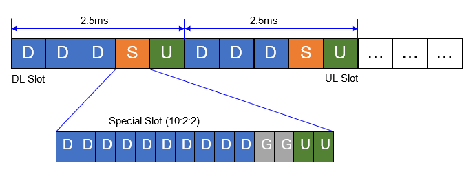

gNB MAC usage
This document describes the basic functioning of the 5G MAC scheduler, describes the periodic output, and explains out the various configuration options that influence its behavior.
General¶
The 5G MAC scheduler is a proportional fair (PF) scheduler, "approximating wide-band CQI" (for lack of a better term, but CQI is typically used for PF) through the selection of an MCS to use. For a detailed description of the scheduler pipeline and how to replace individual policies, see Scheduler Architecture.
Concretely, the scheduler loops through all UEs and calculates the PF coefficient using the currently selected MCS, and the historical achieved rate. The UE with highest coefficient wins and is scheduled RBs until all resources are used, or until it has no more data to fill RBs, in which the scheduler continues with the UE with the second-best coefficient.
UEs with retransmissions are allocated first; similarly, UEs that have not been scheduled for some time in UL are scheduled automatically in UL and have therefore priority over data with "normal" traffic.
The MCS selection is done in nr_dl_mcs_select_default() / nr_ul_mcs_select_default() in files
gNB_scheduler_dlsch_default_policies.c
and
gNB_scheduler_ulsch_default_policies.c.
The BLER estimation itself is computed separately in update_bler_stats() in
gNB_scheduler_primitives.c,
and the MCS policy reads the result. It considers two thresholds for a "BLER" that is computed from the number of
first-round retransmissions over total transmissions in the last window (50ms).
If that ratio is higher than an "upper" threshold (see
dl/ul_bler_target_upper in the configuration section below), it is
interpreted as "bad channel" and MCS is decremented by 1. If the ratio is
lower than a "lower" threshold (see dl/ul_bler_target_lower), it is
interpreted as "good channel" and MCS is incremented by 1. This happens each
window.
The actual scheduler implementation can be found in functions nr_dl_proportional_fair() and
nr_ul_proportional_fair() in files
gNB_scheduler_dlsch_default_policies.c
(for DL) and
gNB_scheduler_ulsch_default_policies.c
(for UL), respectively.
PDCCH aggregation level¶
PDCCH aggregation level is selected using closed loop controller, where DL HARQ
feedback is the controller feedback signal. It is used to increment pdcch_cl_adjust
variable if no feedback is detected and decrement the variable when feedback is detected.
pdcch_cl_adjust is later mapped to the PDCCH aggregation level range.
The value of pdcch_cl_adjust is clamped to range <0,1>, the increment value is 0.05 while
the decrement value is 0.01. These values are selected to ensure PDCCH success rate is high.
See Examples below for futher explaination.
The possible values of aggregation level on UE SS can be configured via
uess_agg_levels configuration option. By default the gNB uses two candidates
in aggregation level 2 which translates to uess_agg_levels set to [0, 2, 0,
0, 0]. For example, to enable one candidate on aggregation levels 2 and 4 set
uess_agg_levels to [0, 1, 1, 0, 0].
Examples:¶
Example 1:¶
Say we have 90% PDCCH success rate at aggregation level 1, pdcch_cl_adjust will stay at 0
for most of the time. 2 consecutive PDCCH failures will not result in increasing the aggregation
level (because (0.05 + 0.05) * 4 = 0.4 which is closer to 0 than to 1). If PDCCH fails 3 times
in a row the aggregation level will change to 2 and hopefully back to 1 once more PDCCH successes
happen.
Example 2¶
Say we have 0% PDCCH success rate (radio link failure scenario) but pdcch_cl_adjust is 0 indicating
perfect PDCCH channel. it would take ~18 PDCCH failures to reach maximum aggregation level.
Power control¶
The gNB tracks the average SNR used by the UE for PUSCH/PUCCH, and sends TPC
commands to maintain the UE at a specific target SNR. Internally, it maintains
an average of measured SNR and RSSI. It also updates tpc_in_flight, which
tracks TPC changes that don't show up in the average yet. For instance, imagine
that the target SNR of 15 changes to 20. Three successive TPC commands need to
be sent (+3, +1, +1), but it will take time to show up in the average SNR. To
account for this, tpc_in_flight is updated by the TPCs sent, and an average
will make it go down back to zero at the same pace as the average SNR
approaches the target SNR. The sum of average SNR and tpc_in_flight sums up
to the actual, current SNR, which approximates the target SNR. The power
control tries to keep the SNR within -1<=targetSNR<=+2dB to avoid too many TPC
changes. On each DTX, tpc_in_flight is lowered by 1dB, correspondingly
lowering the current SNR by 1dB, which result in "boosting" the UE's target
SNR.
For PUCCH, the gNB will try to keep the UE at the target SNR as configured by
pucch_TargetSNRx10.
For PUSCH, two modes are available currently. Both have in common that
pusch_TargetSNRx10 is used to configure a specific target SNR, but the
meaning of the target SNR changes depending on the mode. (For the following,
note that as per 38.213 Sec 7.1, the number of PRBs used for a PUSCH
transmission is always taken into account by the UE).
- the "normal" mode (default), in which the gNB tries to keep the UE at the target SNR, regardless of MCS (and layers) used. This is the default. Depending on the target MCS and number of layers, the target SNR should be placed in the 20-30dB range.
- the "deltaMCS" mode (
deltaMCS=1, see below). In this mode, the UE accounts for the MCS in the power used for PUSCH transmissions automatically (see delta_TF factor in TS 38.213 Sec 7.1) when using only one layer. Thus it is sufficient to set a lower target SNR (5-10dB). As the spec foresees that this only works for one layer, it is suggested to disable SRS to disable multi-layer operation in UL.
Periodic output and interpretation¶
The scheduler periodically outputs statistics that can help you judge the radio
channel quality, i.e., why a UE does not perform as you would expect. The
scheduler outputs this info in log level "INFO". The same information is also
available in the the file nrMAC-stats.log in the same directory in which
nr-softmodem is run.
Example:
UE RNTI 2460 PCI 0 CellID 12345678 CU-UE-ID 2 in-sync PH 28 dB PCMAX 24 dBm, average RSRP -74 (8 meas), average SINR 40.0 (32 meas)
UE 2460: CSI [CQI 15 RI 2 PMI (14,1)] SRS [UL-RI 2 TPMI 0]
UE 2460: dlsch_rounds 32917/5113/1504/560, dlsch_errors 211, pucch0_DTX 1385 (SNR 19.8+0.2) RSSI -44.2, BLER 0.19557 MCS (1) 23 (Qm 8) CCE fail 3
UE 2460: ulsch_rounds 3756/353/182/179, ulsch_errors 170, ulsch_DTX 285, BLER 0.33021 MCS (1) 27 (Qm 8 deltaMCS 0) NPRB 5 SNR 31.0 (-1.0) RSSI -39.8 CCE fail 0
UE 2460: LCID 1,2,4, goodput DL 120.50 UL 12.30 Mbps
In the first line,
UE RNTI(here2460): this is also used as the DU UE ID over F1; each line is prepended with the RNTIPCI(0): Physical Cell ID, used to identify the cell the UE is served by, unique among neighboring cellsCellID(12345678): NR Cell Identity for the cell read from the config, used to globally identify the cell, unique per cell within the same PLMNCU UE ID(2): separate identifier from the RNTI to handle multiple UEs across DUs (in which case RNTI conflicts are possible)- whether a UE is
in-sync(actively being scheduled) orout-of-sync(the UE is not being scheduled, because it did not respond when being scheduled in UL or since it has radio-link failure PH(28): Power Headroom (TS 38.133 section 10.1.17.1.1) normalized by allocated RBs: the amount of power the UE has left. If it is > 40 you can achieve full UL throughput.PCMAX(24 dBm) is what the UE reported as maximum UL transmit power it can output in the channel.RSRP(-74): measured power of the DL reference signals at the UE. >-80dBm you should have full DL throughput. <-95 dBm, you are very limited in terms of connectivity.SINR(40.0): measured signal to interference and noise ratio of the SSB received at the UE. Maximum value that can be reported by the UE is 40.0 dB.
The second line reflects channel state information (CSI) as reported by the UE, and only appear if CSI-RS/SRS are enabled and received (for some bands, they cannot be enabled). Note that these quantities reflect indications for the gNB, but it might deviate (e.g., use less layers).
CQI(15): the channel quality indicator is a number between 0 and 15. It indicates the achievable spectral efficiency of the UE. 15 means highest, 0 is lowest. This corresponds to a 4-bit table in 38.214 with actual spectral efficiencies in bits/s/HzRI: Rank indicator 1-4. If 1 it means limited to 1 layer transmission on DL. 2 two layers, etc.PMI: precoding matrix indicator. It's a measure of the spatial-direction of the gNBs transmit array as seen by the UE. It indicates the precoding that the gNB applies. It should be more or less stationary unless the UE is moving around quickly. It can jump when objects move around the UEUL-RI,TPMI: Uplink Rank indicator and transmit precoding matrix indicator, as in DL.
The third and fourth line show HARQ-related information:
dlsch_rounds A/B/C/D(32917/5113/1504/560). This is the number of transmissions by the gNB for each round of the HARQ protocol.Ais the first round, B is the second, etc. IfAis high andBis low,Cis lower andDis around 0, then things work well. IfBis around the same asA, then the first round is almost always in error. This is not usually good unless the UE is far from the gNB.dlsch_errors(211) is the number of errors, meaning that after 4 transmissions the MAC transport block was not received by the UE. A high number is not good/it should be a very low number, again unless there are severe radio conditions.pucch0_DTX: this is the number of PUCCH format 0 (or 1 later) missed detections (unreceived ack/nak). This means that either the UL is very bad and ACK/NAK cannot be conveyed properly or DL DCIs are missed by the UE. This is also something that should be very small compared toAindlsch_rounds.(SNR x+y): PUCCH SNR wherexis the average PUCCH SNR andythe difference to the target (positive: above SNR, negative: below)- PUCCH
RSSI: the received signal strength indicator, either in dBm or dBFs. For OAI L1, this is in dBFs. DLSCH BLERis the current measured block-error rate of the DLSCH. Basically a moving average ofB/Aindlsch_rounds. This is something that should always be close to the target bler that the MAC scheduler uses. typically 10-30% if we want a high throughput scheduling policy.MCS (Q) M: M (0-28) is the current MCS used by the MAC scheduler and Q is the mcs table: 0=64QAM, 1=256QAM, 2=low SE table for URLLCQm X: modulation order: 2=QPSK, 4=16QAM, 6=64QAM, 8=256QAM.ulsch_rounds/ulsch_errors: same as DLSCH but for UL.ulsch_DTX(285): number of PUSCH missed detection (i.e. signal energy below threshold in configuration file,L1s.pusch_dtx_threshold, which is 10 times the actual unnormalized digital signal level). This is an indication of either very poor radio conditions (UE cannot reach the gNB), power control problems, or missed DCI 0_x DCIs. It should be low compared toAinulsch_roundswhen things are working properly.- ULSCH
BLER/MCS: same as DLSCH but for UL. - ULSCH
Qm X deltaMCS Y: modulation order: 2=QPSK, 4=16QAM, 6=64QAM, 8=256QAM and the dB offset for deltaMCS component in PUSCH power control law. If deltaMCS is disabled (this is the default) then it indicates 0. When deltaMCS is enabled it indicates the current power offset applied by the UE on the UL corresponding to the scheduled MCS - ULSCH
NPRB: current number of PRBs scheduled by the gNB. This will fluctuate a lot but when doing high throughput with iperf, it indicates the number of PRBs that the UE is actually able to use with its power budget and should be high. - ULSCH
SNR: the current SNR that the gNB receives the UE PUSCH signal with. This value should be close to the target SNR; in paranthesis, the difference to the target SNR. - ULSCH
RSSI: as for PUCCH. UseMACRLCs.[0].pusch_RSSI_Thresholdto limit. - Both ULSCH/DLSCH
CCE fail: lists the number of failed CCE attempts. If this number gets high, it signifies that the scheduler tried to scheduled this UE, but could not allocate the DCI.
In the last line:
MAC goodputforDLandUL: smoothed (EWMA) goodput in Mbps, reflecting the actual MAC-layer throughput achieved by the UE excluding retransmissions, i.e., only counting the amount of "new data". This might be much lower than the maximum throughput if there are many retransmissions.
Configuration of the MAC¶
Split-related options (running in a DU)¶
See nFAPI documentation or Aerial tutorial for information about the (n)FAPI split.
See F1 documentation for information about the F1 split.
MAC scheduler-related configuration options¶
The following options have an influence on the MAC scheduler operation (for all UEs, if applicable), either on the MAC scheduler operation directly or how a UE is configured.
In the MACRLCs section of the gNB/DU configuration file:
ulsch_max_frame_inactivity(default 10): number of frames before a UE is scheduled automatically in UL. Lowering can improve latency at the expense of more resources in idle (which limits the number of UEs, and increases UE power consumption)pusch_TargetSNRx10(default 200): target SNR in PUSCH times 10 (200 corresponds to 20dB target SNR)pucch_TargetSNRx10(default 150): target SNR in PUCCH times 10 (as above)ul_prbblack_SNR_threshold(default 10): target SNR for disabling RB scheduling in uplink on affected RBs.pucch_FailureThres(default 10): number of DTX on PUCCH after which scheduler declares UE in radio link failure and moves it to "out-of-sync state". Currently not used.pusch_FailureThres(default 10): number of DTX on PUSCH after which scheduler declares UE in radio link failure and moves it to "out-of-sync state"dl_bler_target_upper(default 0.15): upper threshold of BLER (first round retransmission over initial transmission) to decrease MCS by 1dl_bler_target_lower(default 0.05): lower threshold of BLER (first round retransmission over initial transmission) to increase MCS by 1dl_min_mcs(default 0): minimum MCS to use for any UEdl_max_mcs(default 28): maximum MCS to use for any UEul_bler_target_upper(default 0.15): asdl_bler_target_upperul_bler_target_lower(default 0.05): asdl_bler_target_lowerul_min_mcs(default 0): asdl_min_mcsul_max_mcs(default 28): asdl_max_mcsdl_harq_round_max(default 4): maximum number of HARQ rounds, i.e., retransmissions to perform, in DLul_harq_round_max(default 4): asdl_harq_round_maxmin_grant_prb(default 5): number of PRBs to schedule for UE after activity (seeulsch_max_frame_inactivity) or after scheduling request (SR)identity_precoding_matrix(default 0=false): flag to enable to use only the identity precoding matrix in DL precodingbf_method(default "straight-wire"): selects the beamforming method, one of "straight-wire", "das", "predefined" or "dynamic" (for more informationbeamforming.md)beam_duration(default 1): duration/number of consecutive slots for a given set of beams, depending on hardware switching performancebeams_per_period(default 1): set of beams that can be simultaneously allocated in a period (beam_duration)ssb_beams: beam indices statically allocated to SSB/PRACH, one per transmitted SSB (required forbf_method = "predefined"; with a digital beam table, each index must name one of its beams)dbt_file: path to a CSV file holding the digital beam tablepusch_RSSI_Threshold: Value between -1280 and 0 which maps to range from -128.0 dBm/dBFS to 0.0 dBm/dBFS. This limits PUSCH TPC commands in case RSSI reaches the threshold and prevents ADC railing. Unit depends on RSSI reporting config.pucch_RSSI_Threshold: Same as above but for PUCCHstats_max_ue(default 8): maximum number of UEs to show in periodical stats; beyond this number, periodical statistics will be disabled (it can still be seen innrMAC_stats.log. Use0to disable periodical stats.
In the gNBs section of the gNB/DU configuration file: some of the parameters
affect RRC configuration (CellGroupConfig) of a UE, and are therefore listed
here, also they pertain to the DU, i.e., the scheduler. Note also that some
SIBs are configured at the DU and some at the CU; please consult the RRC
configuration as well for SIB configuration.
pdsch_AntennaPorts_XP(default 1): number of XP logical antenna ports in PDSCH (see alsoRUNMODEM.md)pdsch_AntennaPorts_N1(default 1): number of horizontal logical antenna ports in PDSCH (see alsoRUNMODEM.md)pdsch_AntennaPorts_N2(default 1): number of vertical logical antenna ports in PDSCH (see alsoRUNMODEM.md)pusch_AntennaPorts(default 1): number of antenna ports in PUSCHmaxMIMO_layers(default -1=unlimited): maximum number of MIMO layers to use in downlinkdo_CSIRS(default 0): flag whether to use channel-state information reference signal (CSI-RS)do_SRS(defaultnone): string to define SRS type (options:none,periodic, oraperiodic)CSI_report_type(defaultssb_rsrp): parameter to enable different CSI reporting (options:ssb_rsrp,ssb_sinrandcri_rsrp) Default setting of CSI reporting quantity is SSB-RSRP.min_rxtxtime(default 2): minimum feedback time for UE to respond to transmissions (k1 and k2 in 3GPP spec)ul_prbblacklist: PRBs that should not be used for UL scheduling. Cf with parameterul_prbblack_SNR_thresholdthat does a similar thing based on measurementsforce_256qam_off(default 0=false): flag whether to disable 256QAM (limit to 64QAM) in DLforce_UL256qam_off(default 0=false): flag whether to disable 256QAM (limit to 64QAM) in DLdisable_harq(default 0=false): flag whether to disable HARQ completely (useful for NTN operation, see <../RUNMODEM.md>). this is a Rel-17 feature and you need to have a capable UE for thisuse_deltaMCS(default 0=false): flag whether to enable deltaMCSnum_dlharq(default 16): number of HARQ processes to use in DL (other valid options are 2, 4, 6, 8, 10, 12, 32; 32 is a Rel-17 features)num_ulharq(default 16): asnum_dlharqfor UL (other valid option is 32; 32 is i Rel-17 feature)du_sibs(default[]): list of SIBs to transmit in the cell. Currently, SIB19 (for NTN) is supported.
| DL MIMO | do_CSIRS |
CSI_report_type |
CSI report Quantity |
|---|---|---|---|
| any | any | ssb_rsrp |
SSB-RSRP |
| any | 0 | cri_rsrp |
SSB-RSRP (no CSI-RS configured) |
| any | 1 | cri_rsrp |
CRI-RSRP |
| any | any | ssb_sinr |
SSB-SINR |
ON (pdsch_AntennaPorts > 1) |
1 | any | cri-RI-PMI-CQI |
Note that activating cri-RI-PMI-CQI will result in that report to be produced
in addition to either SSB-SINR, SSB-RSRP or CRI-RSRP.
DL-MIMO is configured using following parameters:
pdsch_AntennaPorts_XP , pdsch_AntennaPorts_N1 , pdsch_AntennaPorts_N2, maxMIMO_layers
(see also RUNMODEM.md)
ServingCellConfigCommon parameters¶
The gNBs configuration section has a big structure servingCellConfigCommon
that has an influence on the overall behavior of MAC and L1. As the name says,
this structure is a flat representation of the ServingCellConfigCommon
structure, specified by 3GPP. Describing all of these parameters would be too
exhaustive; more information about the individual fields can be found in 3GPP
TS 38.331, section 6.3.2 "Radio resource control information elements".
Below is a description of some of these parameters.
Frequency configuration¶
There are many parameters, such as absoluteFrequencySSB, etc., that have an
impact on the frequency used by the gNB. For more information, please check the
corresponding document.
TDD pattern configuration¶
The TDD configuration parameters allow to use one or two TDD patterns.
Single TDD pattern¶
Configure the TDD pattern through these options:
dl_UL_TransmissionPeriodicity: Refers to the UL/DL slots periodicity for the TDD pattern. See below for valid numbers.nrofDownlinkSlots: Refers to the number of consecutive DL slots in the TDD pattern. The number of DL slots depends on the TDD period.nrofDownlinkSymbols: Indicates the number of consecutive DL symbols within the special slot that follows the downlink slots in the TDD pattern. The special slot is needed only to switch from DL to UL. The maximum number of symbols in this slot is 14.nrofUplinkSlots: Refers to the number of consecutive UL slots in the TDD pattern, depending on the desired TDD period.nrofUplinkSymbols: Indicates the number of consecutive UL symbols within the special slot that follows the downlink slots in the TDD pattern. The sum of downlink and uplink symbols should not exceed 14.prach_ConfigurationIndex: index for PRACH according to tables 6.3.3.2-2 to 6.3.3.2-4 in TS 38.211.
As an example, the below figure shows a single TDD pattern, consisting of 3 DL slots, 1 mixed slots (with 10 DL, 2 guard, 2 UL symbols), and 1 UL slot.

To configure this pattern in the configuration file, use
#dl_UL_TransmissionPeriodicity 0=ms0p5, 1=ms0p625, 2=ms1, 3=ms1p25, 4=ms2, 5=ms2p5, 6=ms5, 7=ms10, 8=ms3, 9=ms4
dl_UL_TransmissionPeriodicity = 5;
nrofDownlinkSlots = 3;
nrofDownlinkSymbols = 10;
nrofUplinkSlots = 1;
nrofUplinkSymbols = 2;
The dl_UL_TransmissionPeriodicity is set to 5 (2.5ms). The above figure
shows two TDD periods over 5ms. The 10 ms frame period must be strictly
divisible by the sum of the TDD pattern periods.
Two TDD patterns¶
An optional pattern2 structure is used to signal a TDD pattern 2.
In this case, the TDD pattern may have two extended values of 3 ms and 4 ms.
These values are standardized as dl-UL-TransmissionPeriodicity-v1530. For the
sake of simplicity of the gNB configuration file, we have extended the set of
dl-UL-TransmissionPeriodicity values to support the new TDD periods, as
explained in the table below. However, these values will later be encoded as
dl-UL-TransmissionPeriodicity-v1530 to match the specifications.
dl_UL_TransmissionPeriodicity |
TDD period |
|---|---|
| 0 | 0.5 ms |
| 1 | 0.625 ms |
| 2 | 1 ms |
| 3 | 1.25 ms |
| 4 | 2 ms |
| 5 | 2.5 ms |
| 6 | 5 ms |
| 7 | 10 ms |
| 8 | 3 ms |
| 9 | 4 ms |
The 10 ms frame period must be strictly divisible by the sum of the TDD pattern periods. For example, the 3 ms TDD pattern should be used with a second TDD pattern of 2 ms. Additionally, the 4 ms TDD pattern should be used with a second TDD pattern of 1 ms.
As an example, this configuration might be used, where the first TDD pattern is followed by a second, consisting of 4 DL slots.
# pattern1
# dl_UL_TransmissionPeriodicity
# 0=ms0p5, 1=ms0p625, 2=ms1, 3=ms1p25, 4=ms2, 5=ms2p5, 6=ms5, 7=ms10
# ext: 8=ms3, 9=ms4
dl_UL_TransmissionPeriodicity = 8;
nrofDownlinkSlots = 3;
nrofDownlinkSymbols = 6;
nrofUplinkSlots = 2;
nrofUplinkSymbols = 4;
# pattern2
pattern2: {
dl_UL_TransmissionPeriodicity2 = 4;
nrofDownlinkSlots2 = 4;
nrofDownlinkSymbols2 = 0;
nrofUplinkSlots2 = 0;
nrofUplinkSymbols2 = 0;
};
UL-heavy TDD patterns¶
"UL-heavy TDD patterns", i.e., TDD patterns that have many UL slots are supported. Examples for such patterns would be DSUUU or DDDSUUUUUU.
Note that you should increase the aggregation level candidates as described in
the corresponding section above. This is because the
scheduler has to schedule multiple DCIs in a single DL slots for multiple UL
slots. As a suggestion, you could try uess_agg_levels = [4, 2, 2, 0, 0].
Multiple Dedicated BWPs¶
A maximum of 4 dedicated BWPs can be configured for a UE per standard, but only 1 BWP can be active in UL and DL direction at a given time. In the code we only configure a single BWP for the UE at a given time and we would switch by reconfiguring this BWP. All this procedure is transparent for users and LOGs mark BWP switching according to the configuration file enumeration. It is possible to configure multiple dedicated BWPs and 1st active BWP via configuration file.
Setup of the Configuration files¶
In the configuration file you have the option to select the 1st active BWP, the BWP location and SCS of each BWP in the following way (example with 2 additional BWPs):
first_active_bwp = 1;
bwp_list = ({ scs = 1; bwpStart = 0; bwpSize = 106;},
{ scs = 1; bwpStart = 0; bwpSize = 24;});
This example configures 3 additional BWPs, with IDs from 1 to 3. A similar
example can be found in configuration file
ci-scripts/conf_files/gnb-du.sa.band78.106prb.usrpb200.conf tested in CI.